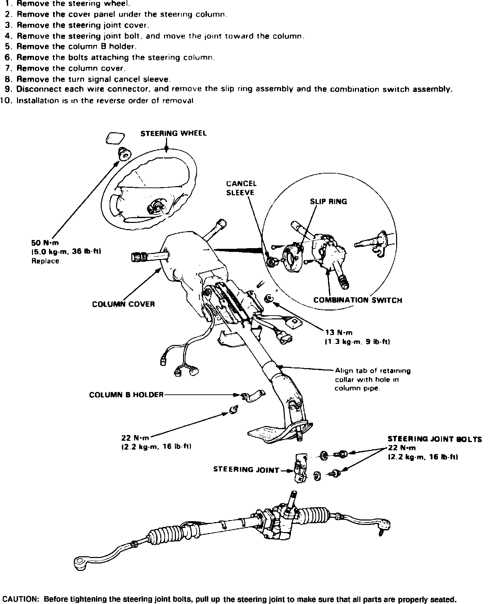

Steering Column: Service and Repair
Fig. 2 Exploded view of steering column. Legend:

Refer to Fig. 2 for steering column service. On models equipped with air bag restraint system, use extreme care when working around steering column or center console area to avoid serious personal injury. All electrical harnesses for this system are covered with a yellow outer insulation, with related components located in the steering column, center console, dash panel and front fenders. It is recommended that only authorized personnel work on vehicles with this type of restraint system.